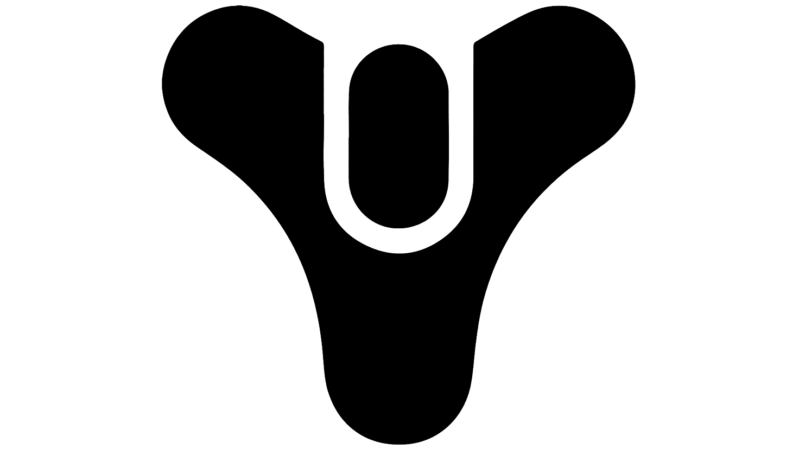

Oryx, Rey de los poseídos
Lord Shaxx
Savathûn, la Reina Bruja
Osiris, hechicero de la Vanguardia
Saint-14
Saint-14 es un legendario Titán Exo y uno de los mayores héroes en la historia de Destiny. Tras ser resucitado por el Viajero, dedicó su vida a proteger a la humanidad durante sus años más oscuros. Se consagró como mito en la Batalla de los Seis Frentes y la Brecha Crepuscular, donde eliminó al Kell de los Demonios a cabezazos. Un Guardián del futuro (el jugador) viajó en el tiempo para entregarle la mítica escopeta Paradoja Perfecta, inspirándolo a convertirse en el símbolo de esperanza que la Última Ciudad tanto necesitaba. Más tarde, buscando a su compañero Osiris, quedó atrapado en el Bosque Infinito de los Vex; allí combatió durante siglos hasta que una Mente Vex drenó su Luz, provocando su aparente muerte. Sin embargo, el jugador alteró las líneas temporales, evitando su caída y trayéndolo de regreso al presente de la Ciudad. A su retorno, asumió el rol de supervisor de las Pruebas de Osiris y afrontó el trauma de su pasado como "el monstruo" de los Caídos. Finalmente, luchó en la primera línea contra El Testigo, desplegando su emblemático escudo de vacío para asegurar la victoria final de la Luz.
Cayde-6
Durante la Edad de Oro, Cayde fue un soldado humano que contrajo enormes deudas de juego. Para saldarlas y proteger a su hijo, "Ace", vendió su conciencia a la corporación Clovis Bray y fue convertido en un Exo. Siglos después del Colapso, su Espectro, Sundance, lo resucitó sin recuerdos, dejando como únicas pistas de su pasado un diario y el As de Picas. Como Guardián Cazador, vivió de aventura en aventura hasta que la muerte de su amigo Andal Brask a manos del mercenario Taniks lo obligó a asumir el puesto de Líder de la Vanguardia. Aunque odiaba el papeleo y prefería la acción, fue una pieza clave para derrotar a enemigos como Oryx, el Rey de los Poseídos. Su carácter temerario lo llevó a sofocar un motín en la Prisión de los Ancianos, donde cayó en una emboscada de los Despreciados. Allí, tras perder a su Espectro por un disparo de francotirador, fue ejecutado con su propia pistola por Uldren Sov. Años más tarde, en La Forma Final, el deseo de Cuervo al dragón Riven trajo temporalmente de vuelta su alma dentro del Viajero. En ese reino, ayudó a derrotar al Testigo y finalmente sacrificó su propia Luz para revivir al Espectro de nuestro Guardián. Así, Cayde-6 cumplió su propósito y descansó en paz para siempre.